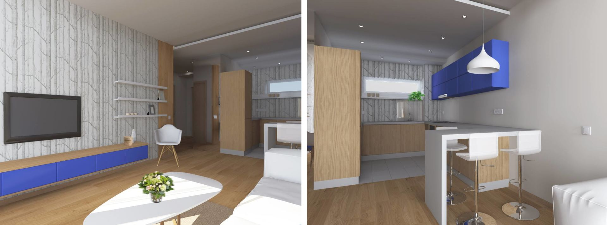

Tapetai, išskirtinės tapetų kolekcijos | Domus galerija
 Pereiti į pagrindinį turinį
Prekybos centras Lapkričio 2d. nedirbs
AUTENTIŠKŲ NAMŲ CENTRAS
Planas Virtualus turasDarbo laikas
Pirmadienis: 10-19 Antradienis: 10-19 Trečiadienis: 10-19 Ketvirtadienis: 10-19 Penktadienis: 10-19 Šeštadienis: 10-16 Sekmadienis: - Šiandien nuo 10 val. Toggle navigation Naujienos Produktai Akcijos Paslaugos Salonai Interjero idėjos Ambasadoriai Dovanų čekis Apie mus Verslo centras KontaktaiProduktai
Svetainės / Miegamojo baldai
Sienų / Lubų apdaila
Tekstilė/Audiniai/ Užuolaidos
Aksesuarai ir įranga
Apšvietimas
Biuro interjero baldai
Grindys / kilimai
Lauko baldai / Terasa / Baseinas
Židiniai/krosnelės
Virtuvės baldai ir įranga
Vonios kambarys, įranga
Durys/laiptai
Tapetai
Dekoratyviniai audiniai ir tapetai nepriekaištingam namų interjerui. Originalaus dizaino, įvairių spalvų ir raštų tapetai atitiks išrankiausio kliento lūkesčius. Aukštos kokybės gaminiai išsiskiria nesudėtinga priežiūra ir lengvais atnaujinimo sprendimais. Racionaliai parinktas dizainas padeda kurti pageidaujamą namų atmosferą, leidžia paslėpti sienų defektus ir vizualiai pakeisti gyvenamosios erdvės išplanavimą. Išskirtinių raštų tapetai gali būti pritaikomi tiek klasikiniam, tiek moderniam būstui. „Domus galerija“ siūlo aukščiausios kokybės gaminius, stilingus dekoratyvinius audinius, natūralių ir sintetinių pluoštų medžiagas, realizuojančias novatoriškus dizainerių sprendimus. Užtikriname nepriekaištingą kokybę, didelę spalvų, raštų ir tekstūrų įvairovę, patrauklias kainas ir profesionalias konsultacijas – išlaisvinkite savo kūrybiškumą ir įgyvendinkite svajonių interjero viziją!
Tapetai Lubų apvadai Mozaika Sienų dangos Fasadų apdaila Sienų plytelės Sienų dekoracijosTapetai VALENTIN YUDASHKIN 82123 (Emiliana Parati)
KROSNYS IR KROSNELĖS 114.00 €Tapetai FLORIS (Eijffinger)
DUBINGIAITapetai BLURRED LINES (Eijffinger)
DUBINGIAITapetai LA MAJORELLE (Eijffinger)
DUBINGIAITapetai PALM SCENE (Eijffinger)
DUBINGIAITapetai GOOD EVENING (Eijffinger)
DUBINGIAITapetai PRETE-MOI TA PLUME (L'ODYSSéE, Christian Lacroix)
RETROFORMA 258.00 €Tapetai PARROTS OF BRASIL (COMPENDIUM/2020, Mind The Gap)
RETROFORMATapetai PALM HOUSE (MANSFIELD PARK, Osborne & Little)
RETROFORMA 387.00 €Tapetai ALFARO (SEVILLE, Cole & Son)
RETROFORMA 170.00 €Tapetai KARMEN
DUBINGIAITapetai KARMEN
DUBINGIAITapetai KARMEN
DUBINGIAITapetai KARMEN
DUBINGIAITapetai KARMEN
DUBINGIAITapetai R.CAVALLI
KROSNYS IR KROSNELĖS Nuo 159.00 €Tapetų kolekcija ROBERTO CAVALLI NO 7
KROSNYS IR KROSNELĖS Nuo 159.00 €Fototapetai MUANCE
DECO HOME Nuo 248.00 €Fototapetų kolekcija VANILLA LIME
DECO HOME Nuo 315.00 €Tapetai LADY ROXANA WALL (Rubelli)
SORTIMENTITapetai GRANCANAL WALL (Rubelli)
SORTIMENTIAudiniai ir tapetai RUBELLI VENEZIA (Rubelli)
SORTIMENTITapetai KASHMIR
KROSNYS IR KROSNELĖS Nuo 71.97 € iki 153.36 €Tapetų kolekcija VALENTIN YUDASHKIN LIMITED EDITION
KROSNYS IR KROSNELĖS 144.00 €Tapetų kolekcija VALENTIN YUDASHKIN HOME FASHION 3
KROSNYS IR KROSNELĖS Nuo 114.00 €Tapetų kolekcija VERSACE-II
KROSNYS IR KROSNELĖS Nuo 68.00 €Tapetų kolekcija BUKHARA
KROSNYS IR KROSNELĖS Nuo 109.00 €Fototapetas 11512 (Consalnet)
KROSNYS IR KROSNELĖS Nuo 24.00 € iki 355.00 €Fototapetas 1727 (Consalnet)
KROSNYS IR KROSNELĖS Nuo 24.00 € iki 112.00 €Tapetai KOTORI (Christian Fischbacher)
SORTIMENTITapetai TROPICAL SCREENS (Yoyo-Designs)
SORTIMENTITapetai PAPERMINT (Papermint)
SORTIMENTITAPETAI W160210302
DUBINGIAI 69.00 €TAPETAI W160210003
DUBINGIAI 78.00 €TAPETAI W160210605
DUBINGIAI 69.00 €TAPETAI W160210404
DUBINGIAI 69.00 €Tapetų kolekcija THE EXTINCT ANIMALS (Arte)
DUBINGIAI Nuo 49.00 € iki 149.00 €Tapetų kolekcija EVERGREEN
KROSNYS IR KROSNELĖS Nuo 42.00 €Tapetų kolekcija BABYLANDIA
KROSNYS IR KROSNELĖS Nuo 34.00 €Provanso tapetų kolekcija BOUQUET
DECO HOME 72.00 €Tapetų kolekcija NANTUCKET STRIPES
DECO HOME 68.00 €Tapetų kolekcija BROWNSTONE
DECO HOME 68.00 €Kvepiančių tapetų kolekcija BLUMARINE (Emiliana Parati)
KROSNYS IR KROSNELĖS 107.00 €Tapetų kolekcija CARRARA (Emiliana Parati)
KROSNYS IR KROSNELĖS 92.00 €Tapetų kolekcija KHROMA
2DITapetai NIVEUM (Wall&Deco)
DISTYLE | SCANLINE Nuo 105.00 €Tapetai PAVOT (Wall&Deco)
DISTYLE | SCANLINE Nuo 105.00 €Tapetai STUCCO (Wall&Deco)
DISTYLE | SCANLINE Nuo 105.00 €Tapetų kolekcija ART NOUVEAU ORIGINS (WallQuest)
DECO HOME Nuo 59.00 €Tapetų kolekcija MOD GEO (WallQuest)
DECO HOME Nuo 49.00 €Kvepiančių tapetų kolekcija BLUMARINE
KROSNYS IR KROSNELĖS Nuo 79.00 € iki 89.00 €Tapetų kolekcija INSOLENCE (Arte)
DUBINGIAI Nuo 109.00 € iki 139.00 €Tapetų kolekcija CANTALA (Arte)
DUBINGIAI Nuo 29.00 € iki 99.00 €Tapetų kolekcija ARTISAN (Arte)
DUBINGIAI Nuo 69.00 € iki 149.00 €Tapetų kolekcija FAVOLA (Cristiana Masi)
KROSNYS IR KROSNELĖS 37.00 €Tapetų kolekcija KASHMIR
KROSNYS IR KROSNELĖS Nuo 71.97 € iki 153.36 €Tapetų kolekcija KATARINA
KROSNYS IR KROSNELĖS 49.00 €Tapetų kolekcija VERSACE III (A.S. Création)
KROSNYS IR KROSNELĖS Nuo 24.00 € iki 219.00 €Tapetų kolekcija ROBERTO CAVALLI NO 6
KROSNYS IR KROSNELĖS 121.00 €Tapetų kolekcija GIANFRANCO FERRÉ HOME NO 2
KROSNYS IR KROSNELĖS 107.00 € 1 2 kitas ›Adresas
P. Lukšio g. 32
Vilnius
Infocentro kontaktai
Tel. +370 656 39 033
info@domusgalerija.lt
Darbo laikas
I - V: 10-19
VI: 10-18
VII: nedirbame
Gaukite naujausias interjero idėjas
Interneto svetainių kūrimas
Privatumo politika
×Kokių prekių pasigendate Domus galerijoje ?
0% 1. Apšvietimo prekių 0% 2. Grindų dangų įvairovės 29% 3. Sienų dangų įvairovės 0% 4. Svetainės baldų 29% 5. Vaikų baldų 14% 6. Sprendimų langų uždengimui 14% 7. Stalo serviravimo prekių (indų, įrankių, etc.) 14% 8. Buitinės įrangos 0% 9. Asortimentas pakankamas Iš viso 7 balsųAčiū už jūsų balsavimą!
Uždaryti Šioje svetainėje naudojami slapukai. Sutikdami naudoti slapukus galėsite patogiau naršyti mūsų svetainėje. Privatumo politika Nesutinku Sutinku Būtinieji slapukaiBūtinieji slapukai padeda interneto svetainei tinkamai veikti ir leidžia užtikrinti pagrindines funkcijas, tokias kaip naršymas puslapyje ir prieiga prie saugių interneto svetainės dalių. Be šių slapukų interneto svetainė tinkamai veikti negali.
Statistikos slapukai
Statistikos slapukai anonimiškai renka ir siunčia informaciją interneto svetainės savininkams, taip suteikdami jiems galimybę sužinoti, kaip lankytojai naršo svetainėse.
Rinkodaros slapukai
Rinkodaros slapukai yra naudojami lankytojams stebėti, šiems lankantis įvairiose interneto svetainėse. Jie leidžia rodyti tas reklamas, kurios yra aktualios konkrečiam lankytojui ir gali jį sudominti – taip užtikrinama didesnė nauda reklamos skleidėjams ir trečiosios šalies reklamuotojams.
Išsaugoti